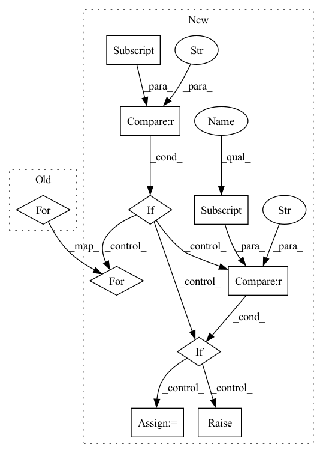

Pattern ID :614
Before Change
input_dim = self.obs_size
// Create layers 0 to second-last.
for out_dim in self.encoder_layer_dim:
layers.append(
SlimFC(in_size=input_dim,
out_size=out_dim,
initializer=normc_initializer(1.0),After Change
// encoder
layers = []
if "fc_layer" in self.custom_config["model_arch_args"] :
if "encode_layer" in self.custom_config["model_arch_args"]:
encode_layer = self.custom_config["model_arch_args"]["encode_layer"]
encoder_layer_dim = encode_layer.split("-")
encoder_layer_dim = [int(i) for i in encoder_layer_dim]
else: // default config
encoder_layer_dim = []
for i in range(self.custom_config["model_arch_args"]["fc_layer"]):
out_dim = self.custom_config["model_arch_args"]["out_dim_fc_{}".format(i)]
encoder_layer_dim.append(out_dim)
self.encoder_layer_dim = encoder_layer_dim
self.obs_size = self.full_obs_space["obs"].shape[0]
input_dim = self.obs_size
for out_dim in self.encoder_layer_dim:
layers.append(
SlimFC(in_size=input_dim,
out_size=out_dim,
initializer=normc_initializer(1.0),
activation_fn=self.activation))
input_dim = out_dim
elif "conv_layer" in self.custom_config["model_arch_args"] :
self.obs_size = self.full_obs_space["obs"].shape
input_dim = self.obs_size[2]
for i in range(self.custom_config["model_arch_args"]["conv_layer"]):
layers.append(
SlimConv2d(
in_channels=input_dim,
out_channels=self.custom_config["model_arch_args"]["out_channel_layer_{}".format(i)],
kernel=self.custom_config["model_arch_args"]["kernel_size_layer_{}".format(i)],
stride=self.custom_config["model_arch_args"]["stride_layer_{}".format(i)],
padding=self.custom_config["model_arch_args"]["padding_layer_{}".format(i)],
activation_fn=self.activation
)
)
pool_f = nn.MaxPool2d(kernel_size=self.custom_config["model_arch_args"]["pool_size_layer_{}".format(i)])
layers.append(pool_f)
input_dim = self.custom_config["model_arch_args"]["out_channel_layer_{}".format(i)]
else:
raise ValueError("fc_layer/conv layer not in model arch args")
self.input_dim = input_dim // record
self.p_encoder = nn.Sequential(*layers)In pattern: SUPERPATTERN
Frequency: 3
Non-data size: 10
Instances Fragment ID: 2181233
Project Name: replicable-marl/marllib
Commit Name: ad9e882a616f22e8a142a6247723317e04279f18
Time: 2023-02-24
Author: hhhusiyi@163.com
File Name: marllib/marl/models/zoo/mlp/base_mlp.py
M Class Name: Base_MLP
N Class Name: Base_MLP
M Method Name: __init__(6)
N Method Name: __init__(6)
M Parent Class: nn.Module,TorchModelV2
N Parent Class: nn.Module,TorchModelV2
M File Name: marllib/marl/models/zoo/mlp/base_mlp.py
N File Name: marllib/marl/models/zoo/mlp/base_mlp.py
M Start Line: 34
M End Line: 59
N Start Line: 30
N End Line: 101
Before Change
for size in kernel_size
]
)
for size, std, mgrid in zip(kernel_size, sigma, meshgrids):
mean = (size - 1) / 2
kernel *= 1 / (std * math.sqrt(2 * math.pi)) * \
torch.exp(-((mgrid - mean) / (2 * std)) ** 2)
After Change
kernel_size = [kernel_size] * dim
if isinstance(sigma, numbers.Number):
sigma = [sigma] * dim
self.kernel_f = kernel_f
// The gaussian kernel is the product of the
// gaussian function of each dimension.
kernel = 1
meshgrids = torch.meshgrid(
[
torch.arange(size, dtype=torch.float32)
for size in kernel_size
]
)
if self.kernel_f == "gaussian" :
for size, std, mgrid in zip(kernel_size, sigma, meshgrids):
mean = (size - 1) / 2
kernel *= 1 / (std * math.sqrt(2 * math.pi)) * \
torch.exp(-((mgrid - mean) / (2 * std)) ** 2)
elif self.kernel_f == "laplacian" :
for size, std, mgrid in zip(kernel_size, sigma, meshgrids):
mean = (size - 1) / 2
kernel *= 1 / (2 * std) * torch.exp(-torch.abs((mgrid - mean)) / std)
else:
raise ValueError("Mode must either be gaussian or laplacian.")
// Make sure sum of values in gaussian kernel equals 1.
kernel = kernel / torch.sum(kernel) Fragment ID: 2181232
Project Name: turagalab/decode
Commit Name: 76fdb7cb7b6d0955b7276439dac11d03e271e104
Time: 2019-04-03
Author: gitdev@LRM.photo
File Name: deepsmlm/generic/noise.py
M Class Name: GaussianSmoothing
N Class Name: GaussianSmoothing
M Method Name: __init__(8)
N Method Name: __init__(7)
M Parent Class: nn.Module
N Parent Class: nn.Module
M File Name: deepsmlm/generic/noise.py
N File Name: deepsmlm/generic/noise.py
M Start Line: 111
M End Line: 117
N Start Line: 95
N End Line: 125
Before Change
input_dim = self.obs_size
// Create layers 0 to second-last.
for out_dim in self.encoder_layer_dim:
layers.append(
SlimFC(in_size=input_dim,
out_size=out_dim,
initializer=normc_initializer(1.0),After Change
nn.Module.__init__(self)
// decide the model arch
self.custom_config = model_config["custom_model_config"]
self.full_obs_space = getattr(obs_space, "original_space", obs_space)
self.n_agents = self.custom_config["num_agents"]
self.activation = model_config.get("fcnet_activation")
self.obs_size = self.full_obs_space["obs"].shape[0]
// encoder
layers = []
if "fc_layer" in self.custom_config["model_arch_args"] :
if "encode_layer" in self.custom_config["model_arch_args"]:
encode_layer = self.custom_config["model_arch_args"]["encode_layer"]
encoder_layer_dim = encode_layer.split("-")
encoder_layer_dim = [int(i) for i in encoder_layer_dim]
else: // default config
encoder_layer_dim = []
for i in range(self.custom_config["model_arch_args"]["fc_layer"]):
out_dim = self.custom_config["model_arch_args"]["out_dim_fc_{}".format(i)]
encoder_layer_dim.append(out_dim)
self.encoder_layer_dim = encoder_layer_dim
self.obs_size = self.full_obs_space["obs"].shape[0]
input_dim = self.obs_size
for out_dim in self.encoder_layer_dim:
layers.append(
SlimFC(in_size=input_dim,
out_size=out_dim,
initializer=normc_initializer(1.0),
activation_fn=self.activation))
input_dim = out_dim
elif "conv_layer" in self.custom_config["model_arch_args"] :
self.obs_size = self.full_obs_space["obs"].shape
input_dim = self.obs_size[2]
for i in range(self.custom_config["model_arch_args"]["conv_layer"]):
layers.append(
SlimConv2d(
in_channels=input_dim,
out_channels=self.custom_config["model_arch_args"]["out_channel_layer_{}".format(i)],
kernel=self.custom_config["model_arch_args"]["kernel_size_layer_{}".format(i)],
stride=self.custom_config["model_arch_args"]["stride_layer_{}".format(i)],
padding=self.custom_config["model_arch_args"]["padding_layer_{}".format(i)],
activation_fn=self.activation
)
)
pool_f = nn.MaxPool2d(kernel_size=self.custom_config["model_arch_args"]["pool_size_layer_{}".format(i)])
layers.append(pool_f)
input_dim = self.custom_config["model_arch_args"]["out_channel_layer_{}".format(i)]
else:
raise ValueError("fc_layer/conv layer not in model arch args")
self.input_dim = input_dim // record
self.p_encoder = nn.Sequential(*layers) Fragment ID: 2181235
Project Name: replicable-marl/marllib
Commit Name: ad9e882a616f22e8a142a6247723317e04279f18
Time: 2023-02-24
Author: hhhusiyi@163.com
File Name: marllib/marl/models/zoo/mlp/base_mlp.py
M Class Name: Base_MLP
N Class Name: Base_MLP
M Method Name: __init__(6)
N Method Name: __init__(6)
M Parent Class: nn.Module,TorchModelV2
N Parent Class: nn.Module,TorchModelV2
M File Name: marllib/marl/models/zoo/mlp/base_mlp.py
N File Name: marllib/marl/models/zoo/mlp/base_mlp.py
M Start Line: 34
M End Line: 59
N Start Line: 30
N End Line: 101
Before Change
self.A_s[0][right_index][i] = 1
self.T_s = torch.zeros((1,time_dim,time_dim), requires_grad=False)
for i in range(time_dim):
if i > 0:
self.T_s[0][i-1][i] = 1
self.T_s[0][i][i-1] = 1
After Change
self.A_s[0][i][right_index] = 1
self.A_s[0][right_index][i] = 1
self.T_s = torch.zeros((1,time_dim,time_dim), requires_grad=False)
if version == "long" :
for i in range(time_dim):
if i > 0:
self.T_s[0][i-1][i] = 1
self.T_s[0][i][i-1] = 1
if i < time_dim - 1:
self.T_s[0][i+1][i] = 1
self.T_s[0][i][i+1] = 1
self.T_s[0][i][i] = 1
elif version == "short" :
self.T_s = self.T_s + 1
else:
raise Exception("model type should be long or short")
self.joints_dim = joints_dim
self.time_dim = time_dim Fragment ID: 2181231
Project Name: sirui-xu/stars
Commit Name: 8a3084b91136d606495cd61d63b80b15ba6bf009
Time: 2022-08-07
Author: xusirui@pku.edu.cn
File Name: Deterministic/model.py
M Class Name: ConvTemporalGraphicalEnhanced
N Class Name: ConvTemporalGraphicalEnhanced
M Method Name: __init__(8)
N Method Name: __init__(7)
M Parent Class: nn.Module
N Parent Class: nn.Module
M File Name: Deterministic/model.py
N File Name: Deterministic/model.py
M Start Line: 134
M End Line: 145
N Start Line: 101
N End Line: 150